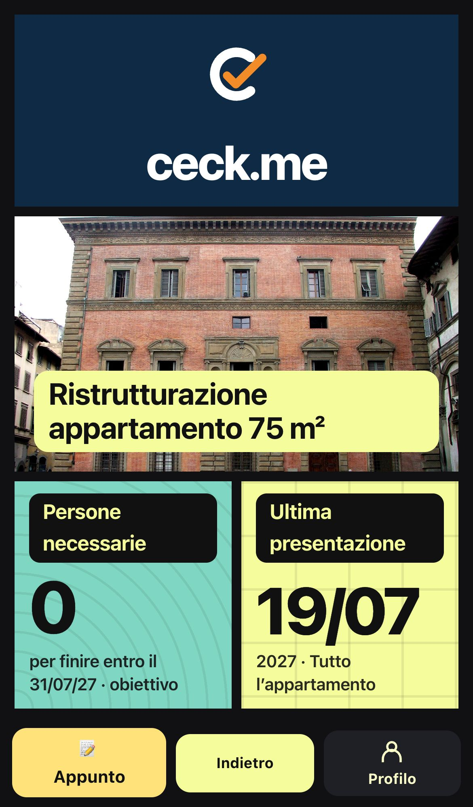
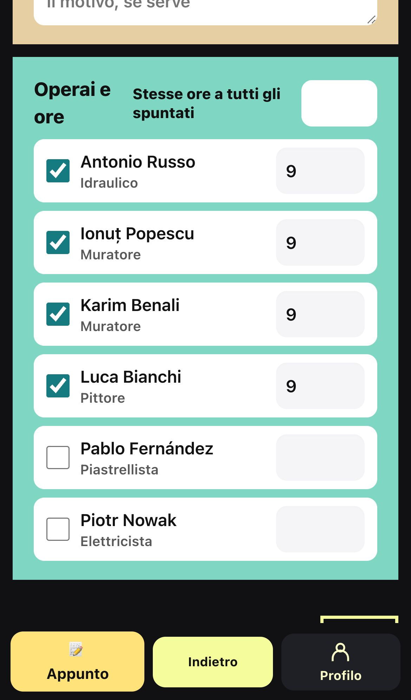
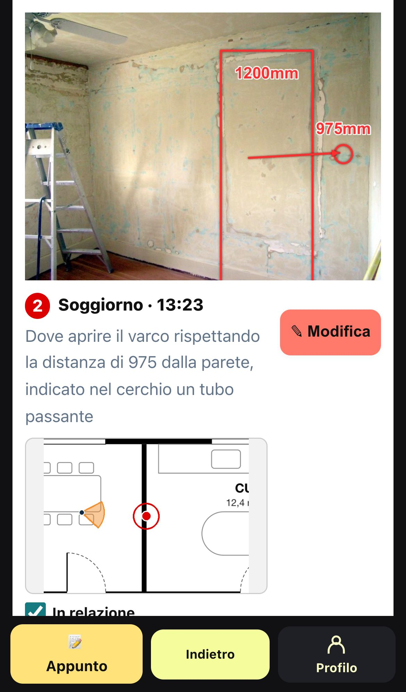
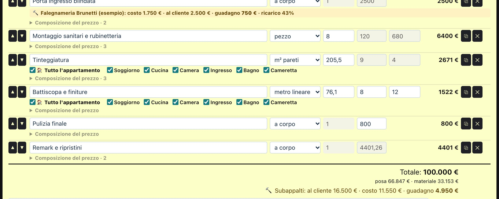
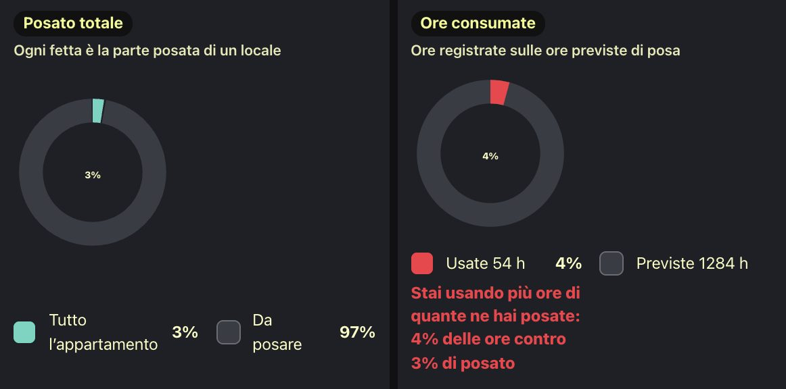
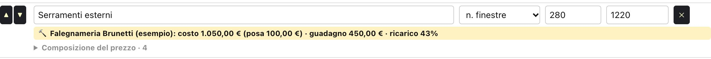
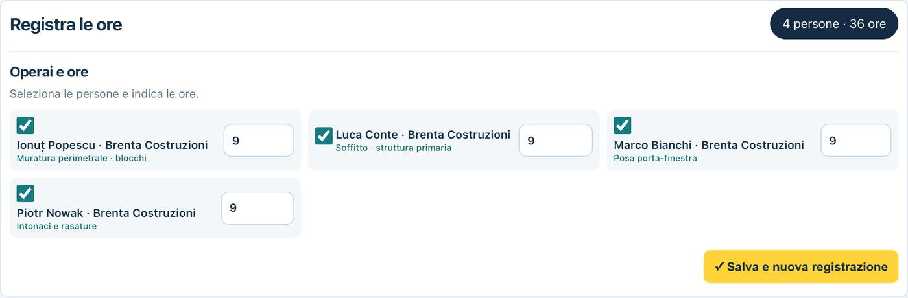

Para autónomos y pequeñas empresas de construcciónDe 1 a 10 operarios. Albañiles, pladuristas, alicatadores, pintores, instaladores.
Doce problemas de la obra. Una app.
Presupuesto, planificación, horas, dinero, visitas, medidas, material, contratos. ceck lo junta todo, en el móvil, mientras trabajas. Y te avisa antes de lo que normalmente descubres después.
Prueba gratis →Hecho por un jefe de obra, después de 43 años de obra.



¿Te suena alguno?
Para cada uno, la pantalla real de ceck.
«Mis precios están en un Excel y cada presupuesto lo rehago desde cero.»
El presupuesto nace de tus precios.
Importas tu Excel tal cual. Cada partida tiene su desglose: mano de obra y material, cola, imprimación, baldosas.


«Me doy cuenta al final de la obra de que he perdido dinero.»
Lo ves mientras trabajas, no con la obra cerrada.
Las horas previstas son solo las de colocación. Junto a lo ejecutado está el anillo de horas consumidas: si gastas más horas de lo que has colocado, se pone rojo.
«Hago la planificación una vez y luego no la vuelvo a mirar.»
Ves el futuro de la obra. Y el futuro vale dinero.
La planificación nace del presupuesto, con las personas reales: un solo fontanero no hace dos trabajos a la vez. Enlazas las tareas con dos toques.
«No sé cuánto gano con lo que hacen los subcontratistas.»
Cada producto del proveedor tiene su margen.
El proveedor tiene sus precios. En cada partida ves cuánto le pagas, cuánto lo vendes al cliente y cuánto ganas. El contrato del subcontratista lo calcula ceck.

«Por la noche copio las horas del equipo de hojas y mensajes.»
Treinta segundos para todo el equipo.
Marcas quién estaba, escribes las horas, listo. Debajo de cada nombre, su oficio.

«Los repasos se pierden entre fotos y mensajes.»
Cada defecto es un punto en el plano.
Una foto, el punto exacto, a quién le toca. Rojo por hacer, amarillo en curso, verde resuelto.
«La visita de obra: fotos sueltas, notas en la libreta, el informe por la noche.»
Recorres la obra. El informe ya está hecho.
Foto, marcas con el dedo lo que está mal, punto y ángulo de vista en el plano. Cada observación se la asignas a alguien.
«Tengo que apuntar dos medidas en la obra y no sé dónde.»
Te basta un dedo.
Fotografías el hueco, mantienes pulsado de un extremo a otro y escribes la medida. La medida se queda en la foto.
«Pido el material por teléfono y luego nadie se acuerda de qué.»
El pedido al proveedor en un minuto.
Escribes las cantidades, ceck envía el PDF al proveedor y te guarda una copia.
«El contrato de un operario vence y nadie se da cuenta.»
Treinta días antes, un punto amarillo.
En el recuadro de Prioridades se enciende un punto que parpadea: dentro ves a quién le vence.
«En el equipo se hablan cinco idiomas.»
Cada uno lee en su idioma.
Español, italiano, rumano, francés, inglés, alemán, polaco. Debajo de cada texto, el segundo idioma.
«El cliente llama cada día para saber cuándo termino.»
El cliente ve la planificación, no tus cuentas.
Lo invitas gratis: ve cómo vas y cuándo terminas. Sin horas, sin precios. Menos llamadas.

No es un programa de oficina. Está hecho para quien está en la obra.
Botones grandes, poco texto, funciona incluso recién quitados los guantes. Si no sabes cómo se hace, pregunta a la ayuda: te responde en tu idioma.
Prueba ceck ahora
Creas tu cuenta en un minuto y entras enseguida. Gratis, sin tarjeta.
Prueba gratis →¿Ya tienes cuenta? Entrar